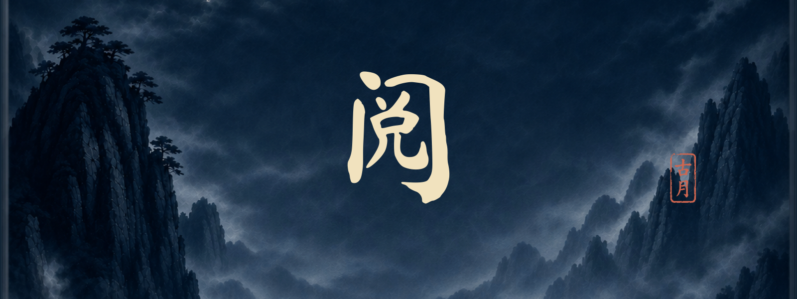

古月 · 阅 · 固定浅色B章多场景套件 v03
已获用户效果确认 · 默认古月章 · 未部署到目标工程
AI 从 README.md、AGENTS.md 和 package.json 开始；python3 VERIFY.py 校验。
apple-touch-icon.pngcircle-logo/logo.png rounded-logo/logo.pngsquare-master/logo.pngcover/logo.png
rounded-logo/logo.pngsquare-master/logo.pngcover/logo.png
web/logo.pngog-image.pngmacos-legacy/AppIcon.png带古月章 · 16px带古月章 · 32px带古月章 · 48px